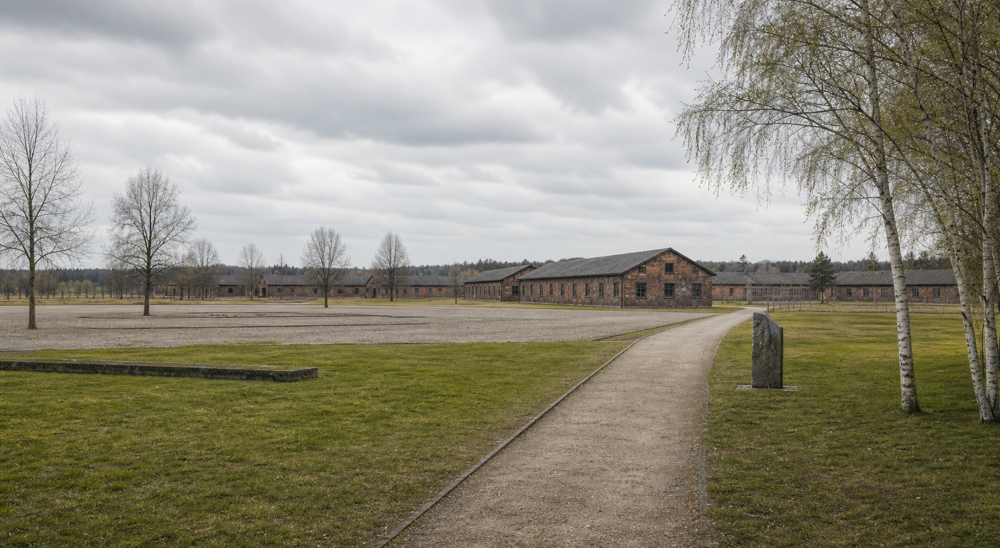

Sichtbarkeit
3 von 5 Befragten finden, dass das Stalag 326 nur teilweise sichtbar ist. Eine Person bewertet die Sichtbarkeit ausdrücklich als nicht ausreichend.

Schloß Holte-Stukenbrock
Erinnerung vor der eigenen Haustür
Wie erinnert Schloß Holte-Stukenbrock heute an einen der großen Orte des Leidens sowjetischer Kriegsgefangener im Nationalsozialismus?
Der Ort
Das Stalag 326 wurde 1941 als Kriegsgefangenenlager errichtet. Besonders sowjetische Kriegsgefangene litten unter Hunger, Krankheiten und unmenschlichen Lebensbedingungen. Tausende Menschen starben hier.
Meine Umfrage
Kennen die Menschen vor Ort das Stalag 326 überhaupt?
haben bereits vom Stalag 326 gehört
haben die Gedenkstätte besucht
fühlen sich nicht vollständig informiert
3 von 5 Befragten finden, dass das Stalag 326 nur teilweise sichtbar ist. Eine Person bewertet die Sichtbarkeit ausdrücklich als nicht ausreichend.
4 von 5 Befragten halten die Erinnerung an die Opfer für wichtig oder sehr wichtig. Die moralische Bedeutung des Erinnerns wird also deutlich wahrgenommen.
Keine befragte Person fühlt sich vollständig informiert. Drei Personen antworten mit „Nein“, zwei mit „Teilweise“.
Quelle: eigene kleine Umfrage, Juni 2026.
Antworten lokaler Institutionen
Zusätzlich zur Umfrage können Rückmeldungen der Stadt Schloß Holte-Stukenbrock und der Kirchengemeinde zeigen, wie lokale Verantwortung praktisch verstanden wird.
Stadt Schloß Holte-Stukenbrock
Kirchengemeinde Schloß Holte
Dieser Abschnitt kann zeigen, ob sich die Wahrnehmung der Bevölkerung mit der Perspektive der Institutionen deckt: Wird das Stalag 326 als ausreichend sichtbar erlebt, oder gibt es eine Lücke zwischen vorhandenen Angeboten und öffentlicher Wahrnehmung?
Auswertung
Die Mehrheit hat schon vom Stalag 326 gehört. Erinnerung ist also nicht vollständig verschwunden.
Gleichzeitig fühlt sich niemand wirklich ausreichend informiert. Genau hier entsteht der Bildungsauftrag.
Am häufigsten wurde mehr Information in Schulen genannt. Lokale Geschichte soll stärker Teil des Lernens werden.
Theologische Perspektive
Tut dies zu meinem Gedächtnis.
Erinnerung gehört zum Kern des Christentums. Sie bewahrt die Würde der Opfer und verhindert, dass Geschichte vergessen wird. Lokale Erinnerungsorte wie das Stalag 326 zeigen, dass historische Verantwortung nicht nur an bekannten Orten wie Auschwitz beginnt, sondern auch vor der eigenen Haustür.
Christliche Erinnerung ist mehr als Rückblick. Sie vergegenwärtigt Leid, Schuld und Hoffnung im Heute.
Wer erinnert, widerspricht dem Vergessen der Opfer und nimmt ihre Menschlichkeit ernst.
Erinnerung fragt, welche Konsequenzen aus Geschichte für Gegenwart und Zukunft entstehen.
Reflexion
Lokale Erinnerungskultur fordert dazu auf, Verantwortung dort wahrzunehmen, wo Geschichte konkret geworden ist.
Fazit